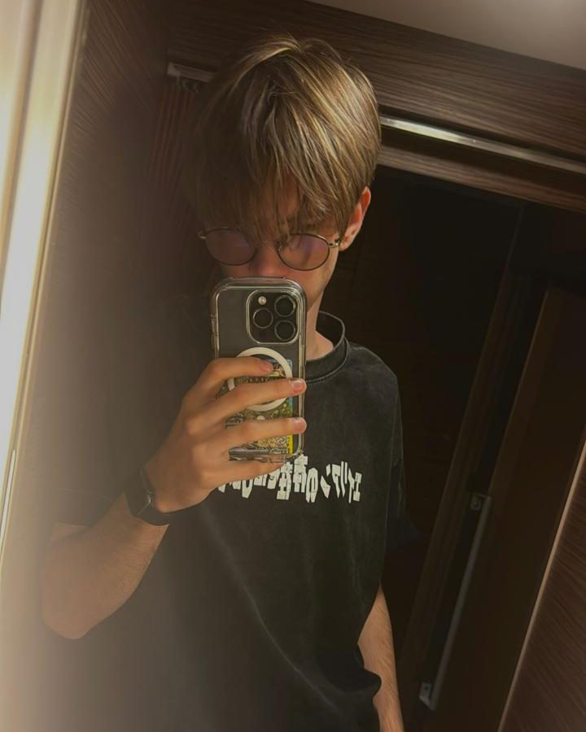
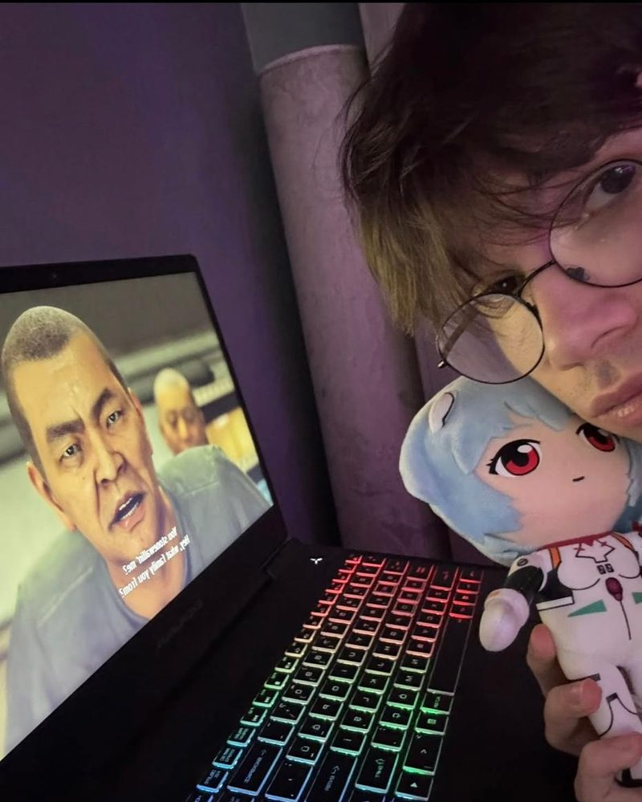

My love,
I just want you to know how much you mean to me and how genuinely happy you make me. I really, really like you, and I don’t think I could ever fully explain how much I love having you in my life.
I love spending time with you, talking to you, listening to you, and sharing even the smallest moments with you. I genuinely enjoy every message, every call, every conversation, and every little thing we do together. Even the simplest things feel special when they’re with you. I love your sense of humour, how funny you are, and how you can make me smile without even trying.

I’ve never felt anything like this for anyone else. I’ve never wanted someone this much or felt this strongly about a person. You’re the only man I want in my life, and I honestly don’t have any desire to look for anyone else. I want you, and I’m happy that it’s you.
I also want to thank you for being patient with me, especially when I get jealous, overthink things, or create problems out of nowhere. I know I can be difficult sometimes. I’m still learning how to handle my feelings better, but I never want you to mistake my fears for a lack of love or appreciation.

I appreciate your patience, your affection, your time, and all the little things you do. I want to make you feel as loved and appreciated as you make me feel.
Even when we argue or have difficult moments, my feelings for you don’t disappear. I still want to talk to you, laugh with you, hear about your day, and spend as much time with you as I can.
I really do love you. I’m so glad I met you, and I hope we get to share many more beautiful moments together.
You have no idea how special you are to me. I wish I could show you just how much I love you.